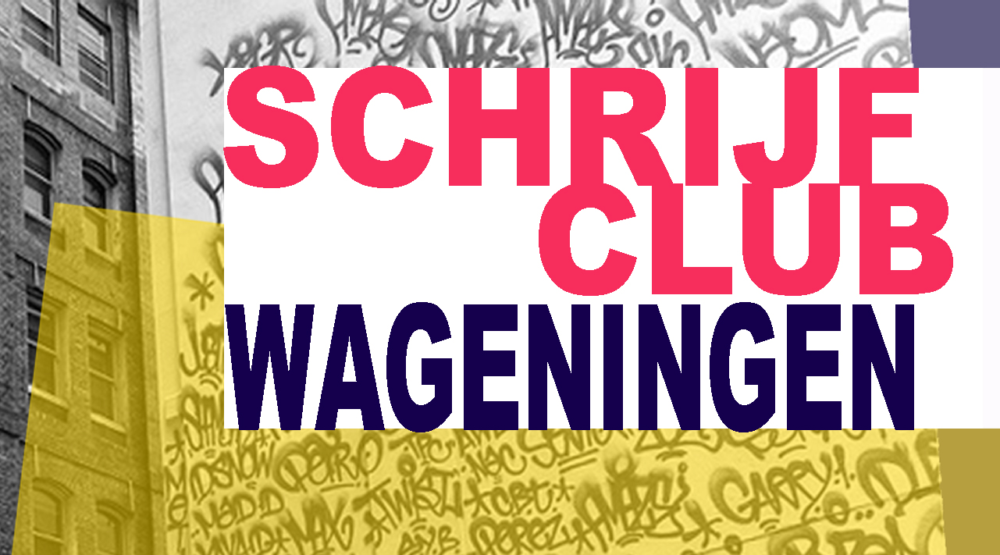

Schrijfclub Wageningen is een actieve schrijfgemeenschap: vaste schrijfgroepen met begeleiding, vrije inloopsessies, en een eigen club voor kinderen. Voor wie schrijven wil ontdekken of gewoon lekker doen.
The Write Place (lokaal 9) van de Cultuurwerkplaats, Arboretumlaan 1, Wageningen.
➔ Bekijk de actuele data in de agenda van de Cultuurwerkplaats.
Wil je schrijven, maar komt het er thuis in je eentje niet van? Bij Write Here Write Now vind je een plek aan de grote ronde tafel tussen andere schrijvers. Of je nu werkt aan je derde bestseller of je eerste thesis, je dagboek of een brief aan je oma. Geen aanmelding nodig, je loopt binnen en je schrijft.
Write Here Write Now is a multilingual drop-in session. No registration required. Just walk in and find your place among other writers. We just share our plans and start writing.
Elke dinsdag 19:45–21:30 en vrijdag 9:00–10:45.
Loop gerust binnen en schuif aan →
Bij Schrijfclub Wageningen schrijf je in een vaste groep van 6 tot 10 mensen, met schrijfoefeningen en begeleiding van Sonja of een andere schrijfdocent.
Wil je een keer komen kennismaken? Neem contact op →
De KrisKrasKlup is de club van Schrijfclub Wageningen voor kinderen: ze schrijven en tekenen er hun eigen verhalen, samen met Sonja (schrijven) en Carlijn van WentinkArt (tekenen).
Wageningen's new English groups for creative writers. You get playful exercises, write on the spot, and share if you wish. There are two groups: one meets every other Wednesday evening, the other on Thursday evenings, twice a month. Check the CWP agenda.
Curious? →